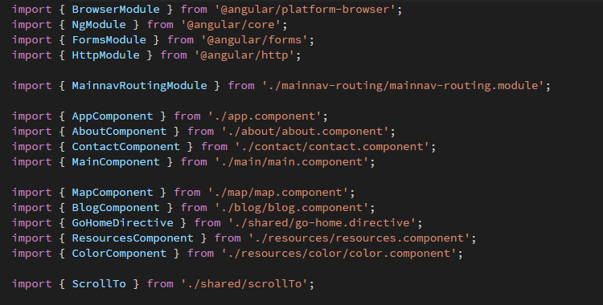
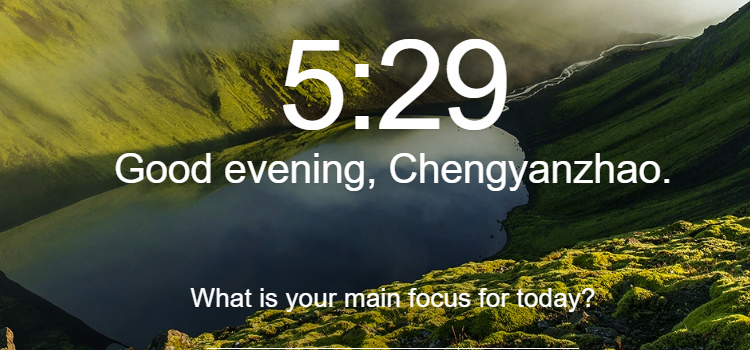
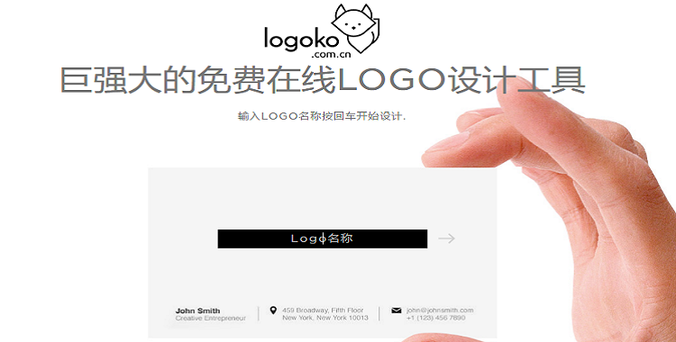
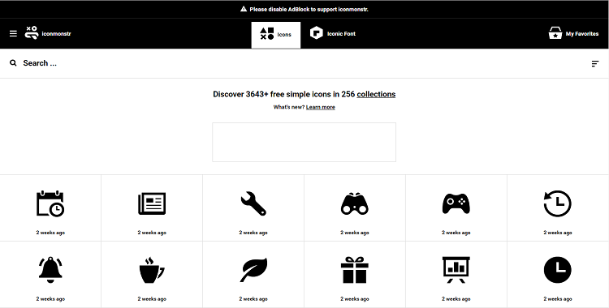
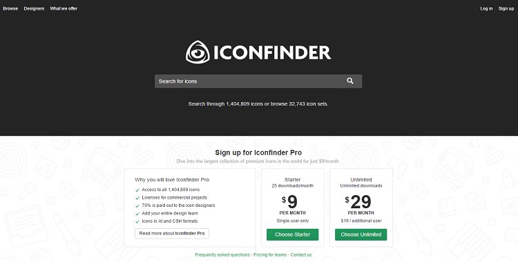
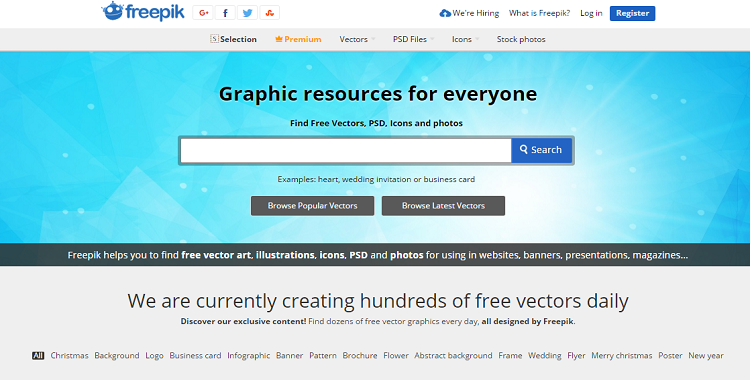
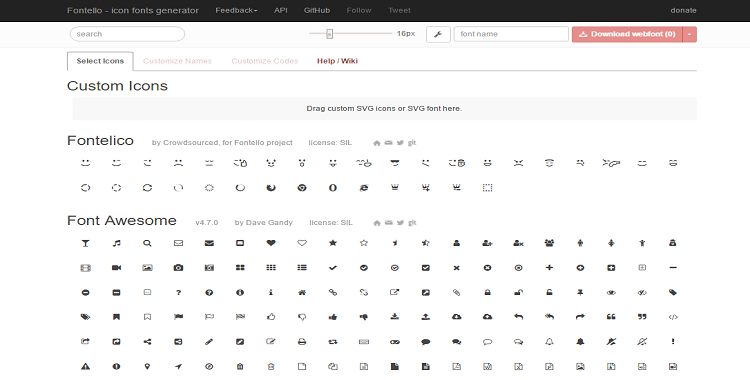
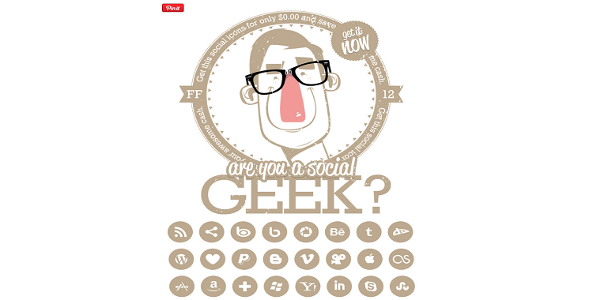

<div class="container">
  <div class="row clearfix">
    <div class="col-md-3">
      <ul class="affix">
        <li class="font">
          <a scrollTo href="#font">Font</a>
          <ul>
            <li class="source-code-pro">
              <a scrollTo href="#navbar-source-code-pro">Source Code Pro</a>
            </li>
            <li class="helvetica-neue">
              <a scrollTo href="#navbar-helvetica-neue">Helvetica Neue</a>
            </li>
          </ul>
        </li>
        <li class="color">
          <a scrollTo href="#color">Color</a>
        </li>
        <li class="icon">
          <a scrollTo href="#icon">Icon</a>
          <ul>
            <li class="logoko">
              <a scrollTo href="#navbar-logoko">Logoko</a>
            </li>
            <li class="iconmonstr">
              <a scrollTo href="#navbar-iconmonstr">Iconmonstr</a>
            </li>
            <li class="find-icons">
              <a scrollTo href="#navbar-find-icons">Find Icons</a>
            </li>
            <li class="icon-archive">
              <a scrollTo href="#navbar-icon-archive">Icon Archive</a>
            </li>
            <li class="icon-finder">
              <a scrollTo href="#navbar-icon-finder">Iconfinder</a>
            </li>
            <li class="noun-project">
              <a scrollTo href="#navbar-noun-project">The Noun Project</a>
            </li>
            <li class="freepik">
              <a scrollTo href="#navbar-freepik">Freepik</a>
            </li>
            <li class="fontello">
              <a scrollTo href="#navbar-fontello">Fontello</a>
            </li>
            <li class="socialico">
              <a scrollTo href="#navbar-socialico">Socialico</a>
            </li>
            <li class="modern-pictograms">
              <a scrollTo href="#navbar-modern-pictograms">Modern Pictograms</a>
            </li>
          </ul>
        </li>
      </ul>
    </div>
    <div class="col-md-9">
      <div id="font" class="source-item">
        <div class="page-header">
          <h1>Font <small>some fonts</small></h1>
        </div>
        <h2 id="navbar-source-code-pro">Source Code Pro</h2>
        <p>这是一款Adobe制作的字体，适用于系统使用。</p>
        <a href="https://github.com/adobe-fonts/source-code-pro" target="_blank">
          
        </a>
        <h2 id="navbar-helvetica-neue">Helvetica Neue</h2>
        <p>这是一款适合网页展示的字体</p>
        <a href="https://github.com/nellielemonier/Helvetica-Neue" target="_blank">
          
        </a>
      </div>
      <div id="icon" class="source-item">
        <div class="page-header">
          <h1>Icon <small>some icons</small></h1>
        </div>
        <h2 id="navbar-logoko">Logoko</h2>
        <p>Iconmonstr专门提供黑白两色的矢量图标资源。</p>
        <a href="http://www.logoko.com.cn/" target="_blank">
          
        </a>
        <h2 id="navbar-iconmonstr">Iconmonstr</h2>
        <p>Iconmonstr专门提供黑白两色的矢量图标资源。</p>
        <a href="https://iconmonstr.com/" target="_blank">
          
        </a>
        <h2 id="navbar-find-icons">Find Icons</h2>
        <p>从这里你可以找到黑白/彩色、扁平/3D的图标。</p>
        <a href="http://findicons.com/" target="_blank">
          
        </a>
        <h2 id="navbar-icon-archive">Icon Archive</h2>
        <p>该网站的评级系统可以帮助你决定使用哪些图标比较好。</p>
        <a href="https://iconmonstr.com/" target="_blank">
          
        </a>
        <h2 id="navbar-icon-finder">Iconfinder</h2>
        <p>该网站提供一个简单的过滤选项来帮助你寻找正确的图标。</p>
        <a href="https://www.iconfinder.com/" target="_blank">
          
        </a>
        <h2 id="navbar-noun-project">The Noun Project</h2>
        <p>黑白纯色图标集。</p>
        <a href="https://thenounproject.com/" target="_blank">
          
        </a>
        <h2 id="navbar-freepik">Freepik</h2>
        <p>一款图标搜索引擎，另外提供整页的配套图标内容。</p>
        <a href="http://www.freepik.com/" target="_blank">
          
        </a>
        <h2 id="navbar-fontello">Fontello</h2>
        <p>这个网站可以让你创建自己的自由webfonts图标。选择你需要的图标符号，改变素大小，自定义文件名，下载。</p>
        <a href="http://fontello.com/" target="_blank">
          
        </a>
        <h2 id="navbar-socialico">Socialico</h2>
        <p>各种圆形风格的社交媒体图标。</p>
        <a href="http://www.fontfabric.com/" target="_blank">
          
        </a>
        <h2 id="navbar-modern-pictograms">Modern Pictograms</h2>
        <p>开放式字体下载。这里有很多富有吸引力的免费图标。图标都被设计得干净且可用性强，很适合于设计工作室或者字体网站设计。</p>
        <a href="https://www.fontsquirrel.com/" target="_blank">
          
        </a>
      </div>
    </div>
  </div>
</div>
